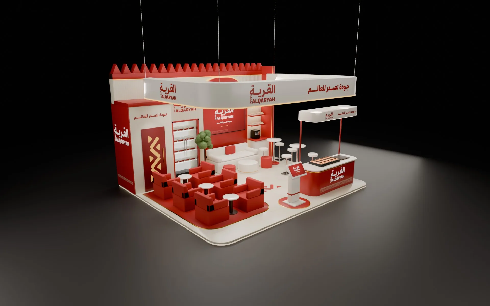
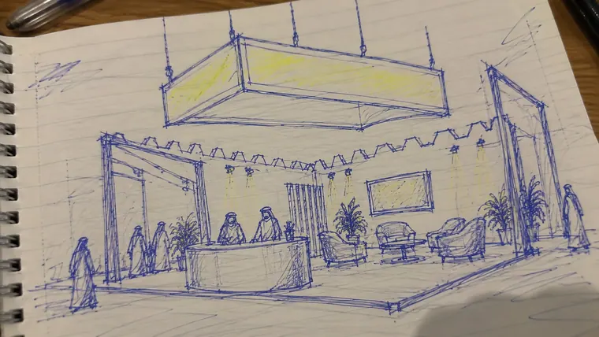
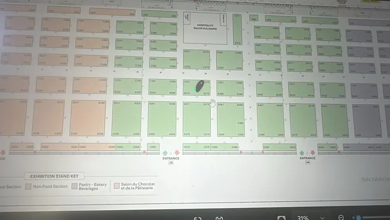
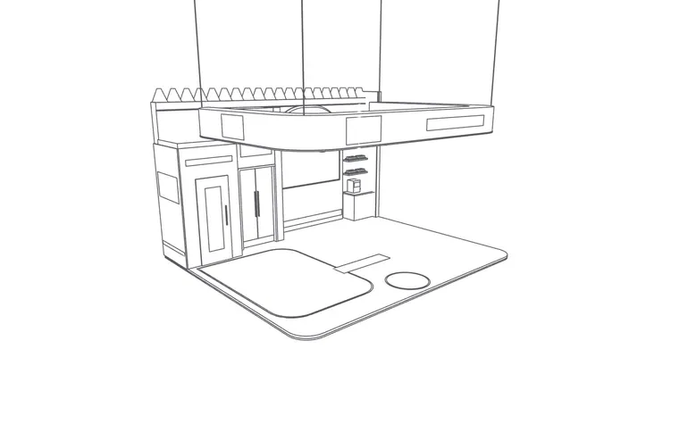
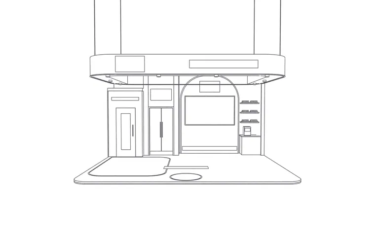
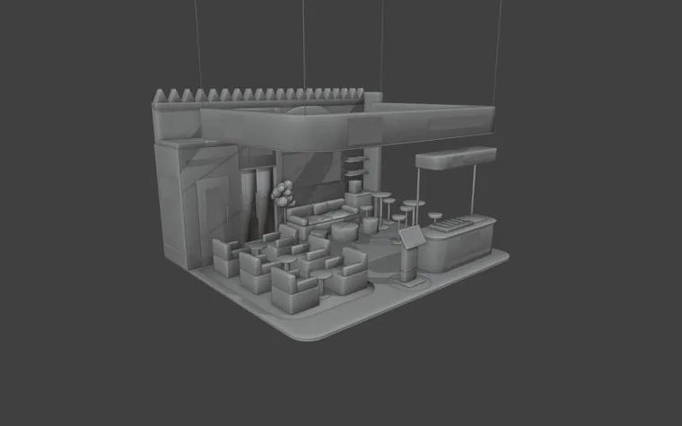
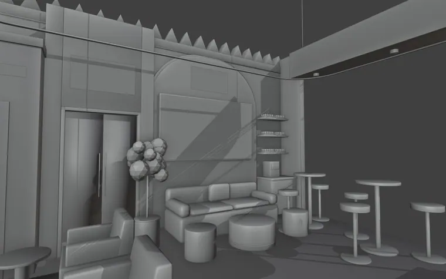
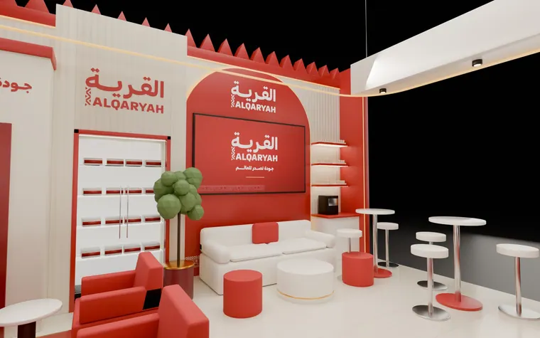

An exhibition booth for a heritage food brand: a red-and-white stand with a castle-edge back wall, a hanging header sign, a live grill counter, a lounge and a bar.
Client
Al-Qaryah
Role
Concept, 3D design and rendering
Scope
Booth design, renders, plan
Tools
Blender, Cycles, ChatGPT

Astandyoucansmellfromtheaisle.
The objective
Give a heritage food brand a stand that draws visitors in and keeps them seated.
The idea
A live grill counter at the front, a red lounge behind it and a castle-edge wall that reads from across the hall.
Visual direction
Brand red and warm white, a hanging header sign, and the logo repeated at every eye level.
Stepbystep
From the first sketch to the final file.
Step 01
Sketch and plan
Pen and paper

Concept sketch

Hall plan
The layout drawn first on paper, then checked against the hall plan and the stand size.
Step 02
Outline
Blender

Outline

Front
Platform, walls and the hanging header blocked out in Blender to true size.
Step 03
Place the models
Blender

Models placed

Interior
Lounge chairs, grill counter, bar, kiosk and plants placed to test seating and flow.
Step 04
Render
Blender, Cycles
Final render

Interior
Brand red, graphics and lighting added, then rendered in Cycles for approval.